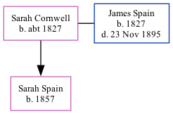

Sarah Cornwell, the wife of James Spain (the three times great-uncle of Nigel Horne), was born in Wickhambreaux, Kent, England c. 18271,2,3,4,5 and married James (a wholesale fruiterer with whom she had 1 child, Sarah Ann) at St Mildred's Church, Canterbury, Kent, England on Jan 18, 18536.
Throughout her life, Sarah lived in several places: in Canterbury in 18611 and in 18712; at St Mary Bredin's Church, Cossington Street in Canterbury on Apr 2, 18719; in Canterbury in 18813; on Old Dover Road in Canterbury on Apr 3, 18818; in Canterbury in 18914; on Old Dover Road in Canterbury on Apr 5, 18917; and in Canterbury in 19015.
1861 England Census Online publication - Provo, UT, USA: The Generations Network, Inc., 2005.Original data - Census Returns of England and Wales, 1861. Kew, Surrey, England: The National Archives of the UK (TNA): Public Record Office (PRO), 1861. Data imaged from the National
1871 England Census Online publication - Provo, UT, USA: The Generations Network, Inc., 2004.Original data - Census Returns of England and Wales, 1871. Kew, Surrey, England: The National Archives of the UK (TNA): Public Record Office (PRO), 1871. Data imaged from the National
1891 England Census Online publication - Provo, UT, USA: The Generations Network, Inc., 2005.Original data - Census Returns of England and Wales, 1891. Kew, Surrey, England: The National Archives of the UK (TNA): Public Record Office (PRO), 1891. Data imaged from The National
1901 England Census Online publication - Provo, UT, USA: The Generations Network, Inc., 2005.Original data - Census Returns of England and Wales, 1901. Kew, Surrey, England: The National Archives of the UK (TNA): Public Record Office (PRO), 1901. Data imaged from the National
England & Wales Marriages 1837-2005 - Findmypast
1891 England, Wales & Scotland Census - Findmypast (was age 64 and the wife of the head of the household)
1881 England, Wales & Scotland Census - Findmypast (was age 54 and the wife of the head of the household)
1871 England, Wales & Scotland Census - Findmypast (was age 44 and the wife of the head of the household)
Family Tree

Map
Generated by Ged2Site. Last updated on Apr 1, 2025